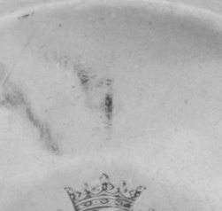
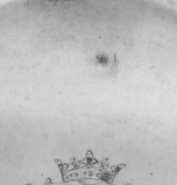

Above the shared arms
The repeated engraving gives a landmark. Dark traces sit above it in both views; only one comes into focus.



The first two crops use the same fraction of their source photographs: 20% of width by 22% of height. Their capture sizes differ (.172: 251 × 238 pixels; .173: 219 × 228 pixels). The detail is a separate 628 × 648 pixel image. Met photographs are Public Domain. Display widths do not express physical scale.
A shared reference
The Met dates both dishes to 1697–1704, titles both Dish (one of a pair), and shows the same central engraving. The crops place a pale strip above that device side by side. Each full view has a dark interruption there, but they differ in visible shape and clarity.
A possible relation
The separate profile photograph belongs to .173's image set. The Met record does not map it to a position on the dish. I read its relation to the small point above the arms as plausible, not proven by the photograph. The .172 view has no close detail; it cannot tell me whether its blurred trace repeats the same impression.
Similar position begins a comparison. It does not establish the same punch, its function, or its identity.